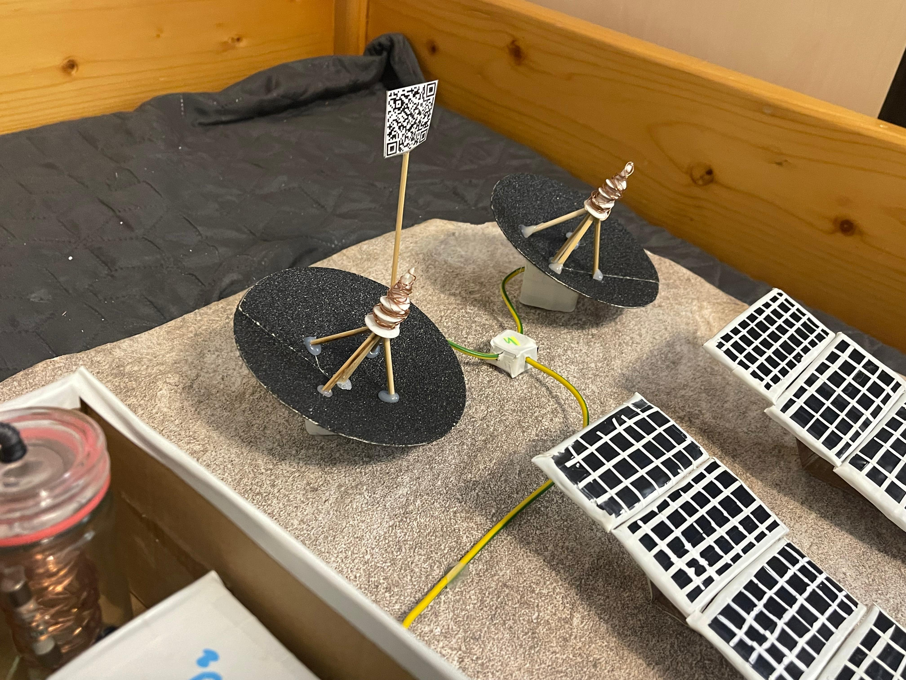

Antenele de comunicație
Două antene parabolice montate în bază.

Rol
- Asigură legătura radio cu Pământul și sateliții.
- Transmit date științifice, imagini și mesaje cu echipa de pe Pământ.
- Permite coordonare și siguranță - monitorizare și suport operațional.